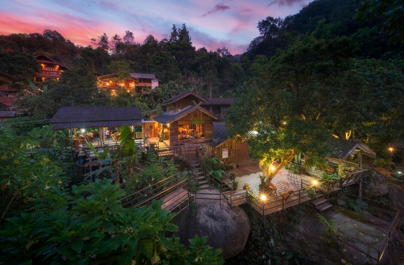
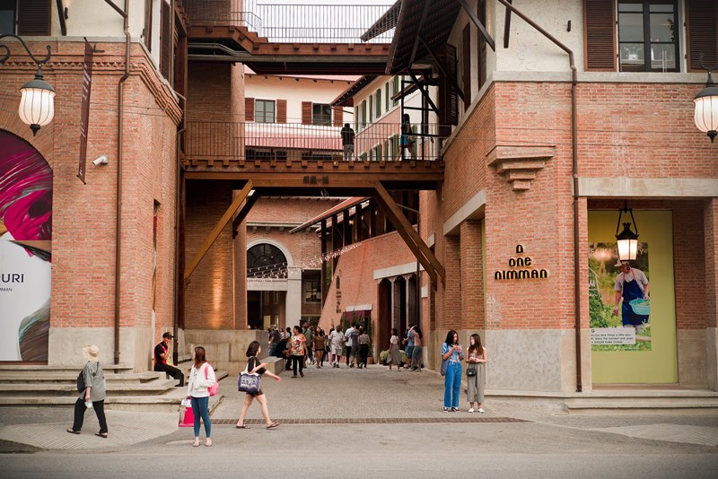
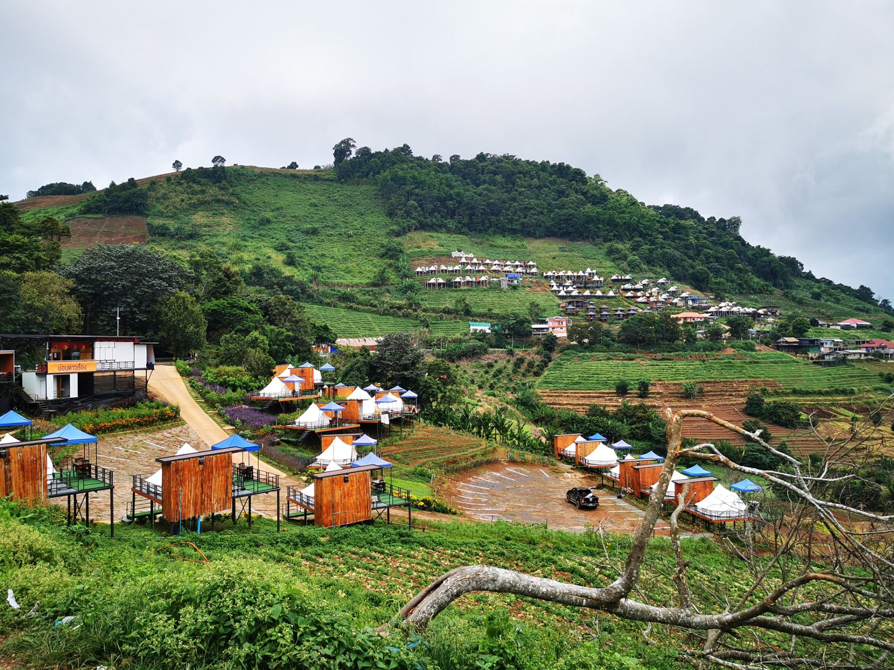

วัดพระธาตุดอยสุเทพ
วัดคู่บ้านคู่เมืองเชียงใหม่ ที่ตั้งอยู่บนยอดดอยสุเทพ พร้อมวิวทิวทัศน์เมืองเชียงใหม่ที่สวยงาม

อุทยานแห่งชาติดอยอินทนนท์
สัมผัสความหนาวเย็นและธรรมชาติที่อุดมสมบูรณ์บน "หลังคาประเทศไทย"

หมู่บ้านแม่กำปอง
หมู่บ้านเล็กๆ ที่โอบล้อมด้วยธรรมชาติ อากาศเย็นสบายตลอดทั้งปี

ถนนนิมมานเหมินท์
ย่านสุดฮิปของเชียงใหม่ ที่เต็มไปด้วยร้านค้า คาเฟ่ และแกลเลอรี่งานศิลปะ

ม่อนแจ่ม
จุดชมวิวที่สวยงาม บรรยากาศดี เหมาะสำหรับการพักผ่อนและชมทะเลหมอกยามเช้า